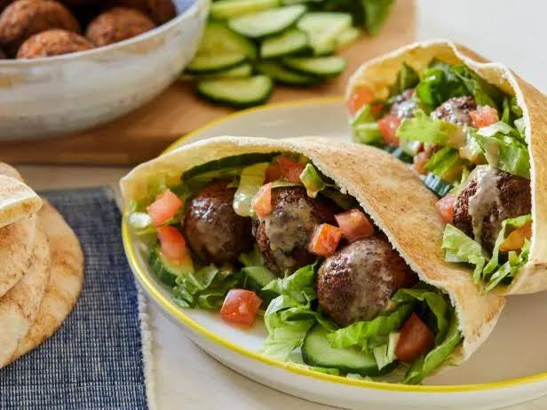

Falafel
To go back to the Index, Click Here

Falafel
A universally cherished street food across the Middle East. These vibrant green, herbaceous spheres are made from ground chickpeas mixed with bold spices, which are then deep-fried to achieve a heavily textured, crispy exterior that yields to a fluffy, savory interior.
Ingredients
- 2 cups dried chickpeas (soaked in water overnight, drained)
- 1 small yellow onion (roughly chopped)
- 4 cloves garlic
- 1/2 cup fresh parsley
- 1/2 cup fresh cilantro
- 1 tbsp ground cumin and 1 tbsp ground coriander
- 1 tsp baking powder
- Neutral oil for frying
Steps
- Place the soaked, uncooked chickpeas into a food processor along with the onion, garlic, parsley, cilantro, cumin, and coriander.
- Pulse the mixture until it is finely minced and holds together when squeezed, being careful not to turn it into a smooth paste.
- Transfer the mixture to a bowl, sprinkle the baking powder over it, mix well, and refrigerate for 1 hour.
- Scoop out small portions of the mixture and gently press them into round balls or slightly flattened patties.
- Heat 2 inches of neutral oil in a deep pan to 175°C (350°F).
- Fry the falafel in batches for 3 to 5 minutes, turning occasionally, until they are a deep, even brown and very crispy.
- Transfer to a paper towel-lined plate to drain before serving.